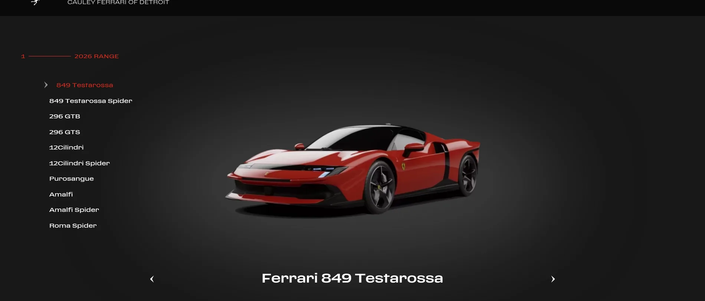
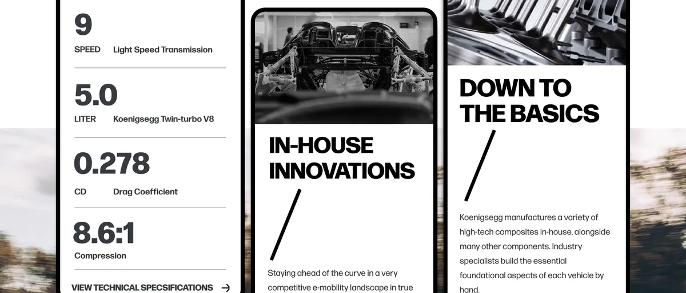
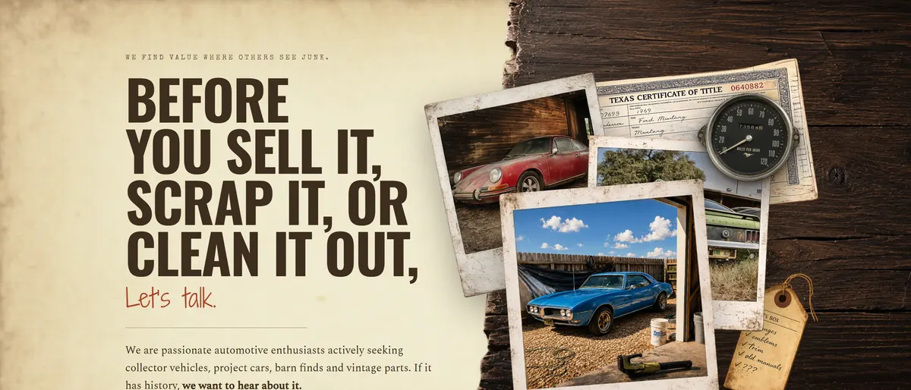
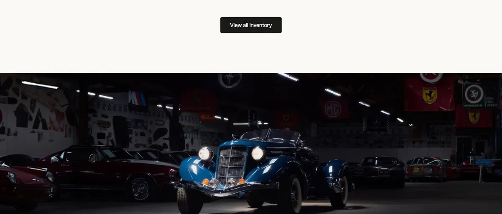
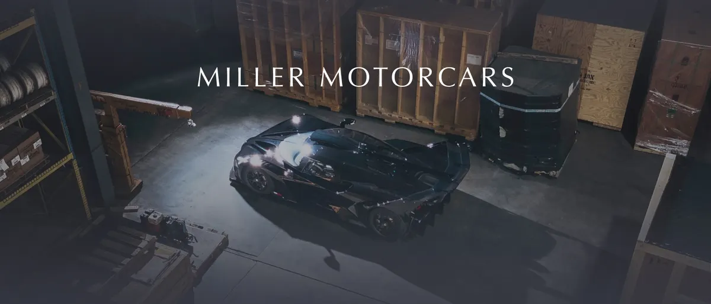
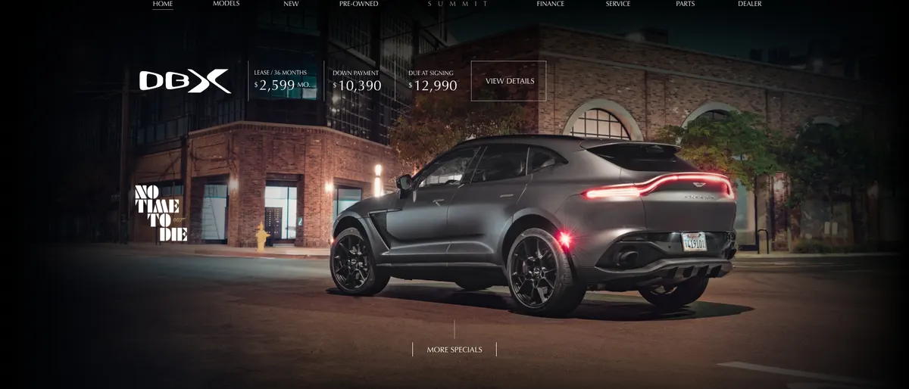
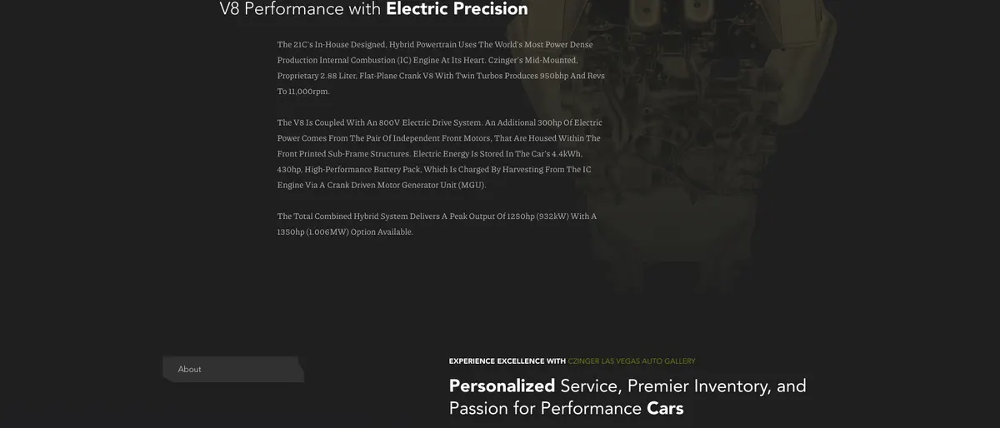

01
Cauley Ferrari
- Sector
- Marque dealer
- Year
- 2025
- Role
- Art direction · Web design · UI
Selected work / 01 — 06
[ONE-LINE POSITIONING STATEMENT, 40–60 CHARACTERS]
[Two sentences, 140–180 characters. Yours to write — no voice has been invented here.]

02
Prestige Imports
- Sector
- Dealer group, service
- Year
- 2026
- Role
- Art direction · Web design · UI


03
Pagani of Chicago
- Sector
- Marque dealer
- Year
- 2025
- Role
- Art direction · Web design · UI


05
MODA Miami / Sotheby’s
- Sector
- Concours & auction
- Year
- 2023
- Role
- Art direction · Web design · UI


06
Porsche Restoration Services
- Sector
- Restoration service
- Year
- 2021
- Role
- Art direction · Web design · UI


Also shipped




Dealer group portal / 2025
[Two or three sentences on this project, 180–260 characters.]
View project →Inventory system / 2025
[Two or three sentences on this project, 180–260 characters.]
View project →
Marque & product / 2025
[Two or three sentences on this project, 180–260 characters.]
View project →
Marque & product / 2025
[Two or three sentences on this project, 180–260 characters.]
View project →Capabilities
- Art direction
- Photography selection, crop, tonal grading, page composition
- Interface
- Inventory, model pages, vehicle detail, enquiry flows
- Design systems
- Type roles, spacing scales, component records
- Sectors
- Marque dealers, dealer groups, concours and auction
- Based
- Vernon Hills, Illinois
- Availability
- [Availability window]